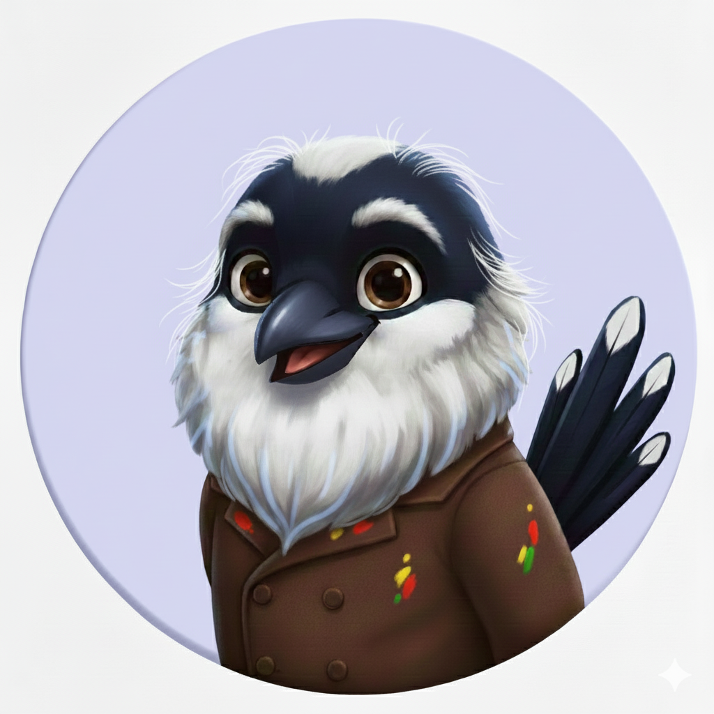
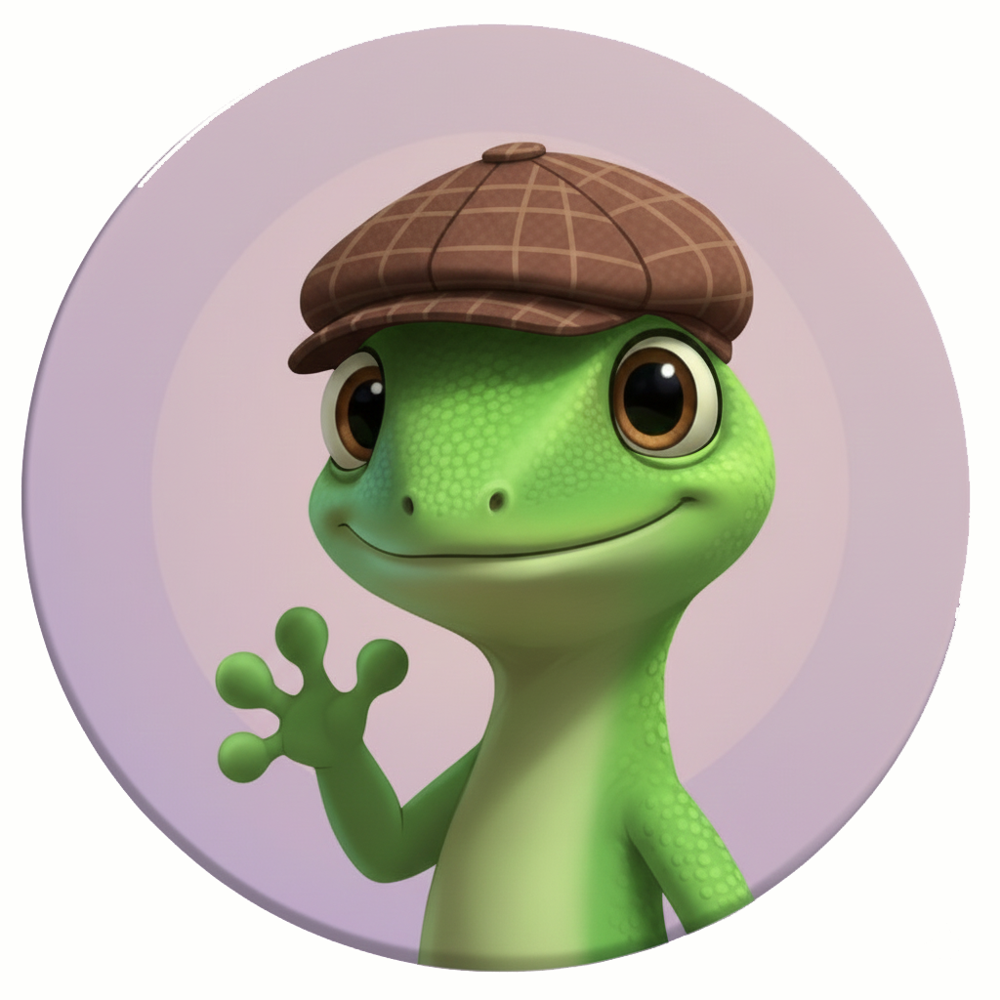

Une aventure de :


À savoir avant de commencer :
- Ce parcours est court en distance, mais sa durée dépend du temps passé sur les énigmes.
- Toutes les dates citées sont justes, s'il y a des pièges, c'est dans les énoncés.
- Il y a au moins 4 réponses justes et au moins 4 réponses fausses.
- Vous pourrez récupérer deux jokers pendant l'aventure pour vous aider à la fin.
1. Point de départ : Place du marché
📍 Cliquez pour y aller :
43.610325, 1.330982
43.610325, 1.330982

Saro Bonjour à vous et bienvenu(e)s sur la place du marché de Colomiers. Aujourd'hui nous avons un superbe défi pour vous : un concours d'anecdotes.

Casso Vous connaissez le principe ? Oui ? Non ? Allez, on vous résume ça très simplement. Nous allons vous raconter des anecdotes sur la ville de Colomiers, et majoritairement sur son expansion entre 1960 et 2000.

Cabia C'est à cette période qu'est apparu et s'est développé le « Plein Centre » dont nous allons faire le tour aujourd'hui. A chacune de ces anecdotes, il vous faudra répondre par « Vrai » ou par « Faux ». Vos réponses seront stockées, et à la fin de notre balade, si vous avez tout juste, à vous le trésor !

Al Pas de panique, vous aurez bien sûr la possibilité de tenter de corriger vos réponses, jusqu'à la fin, et il existe également une option « J'en ai marre » si vous voulez obtenir toutes les réponses à la fin. Alors, prêts à relever le challenge ? C'est parti ! Qui commence ?
Cabia Moi ! Vous êtes ici sur un très bel espace dégagé, mais savez-vous qu'en réalité, quand l'urbanisation de Colomiers a été pensée par l'architecte Viguier en 1960, il n'était pas du tout prévu de laisser ce grand espace vide.
Cabia En réalité le cahier des charges prévoyait ici un « parc des sports » de plus de 5 hectares avec notamment un stade de rugby, entouré d'une piste d'athlétisme de 6 couloirs et de 400 mètres de long. Et puis aussi des tribunes de 5.000 places, six courts de tennis, des terrains de basket, de volley et une piscine !
Cabia Finalement, le projet a été abandonné : les différents équipements sportifs ont été répartis dans plusieurs secteurs de la ville, notamment au Cabirol et à Sélery, tandis que la piscine a bien trouvé sa place ici. Alors, les petits malins : Vrai ou Faux ?
Casso Ah ah ! Bien joué Cabia ! Tous ces chiffres, ça parait très vrai. Mais en même temps, on imagine mal tout ça ici ! J'aimerais pas être à votre place !
Al Et si je peux vous donner un conseil pour toute cette aventure : le diable se cache souvent dans les détails, et le vrai et le faux vont être très difficilement démêlables. Allez, filons vers la prochaine étape, il me tarde de vous poser ma colle.
Suivez l'allée du Rouergue en partant vers la poste, laissez le Temple Beer à votre gauche jusqu'au point 43.609416, 1.330542. Là vous pouvez traverser au passage piéton pour répondre à la question suivante.